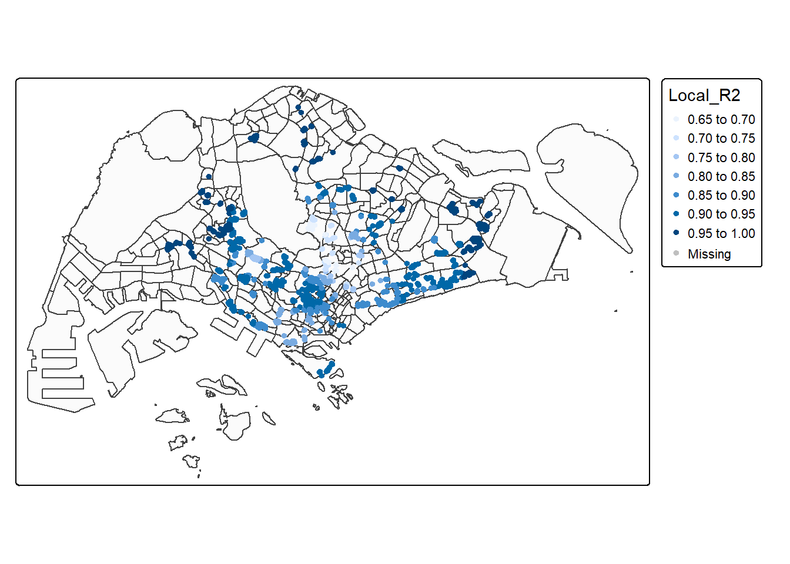
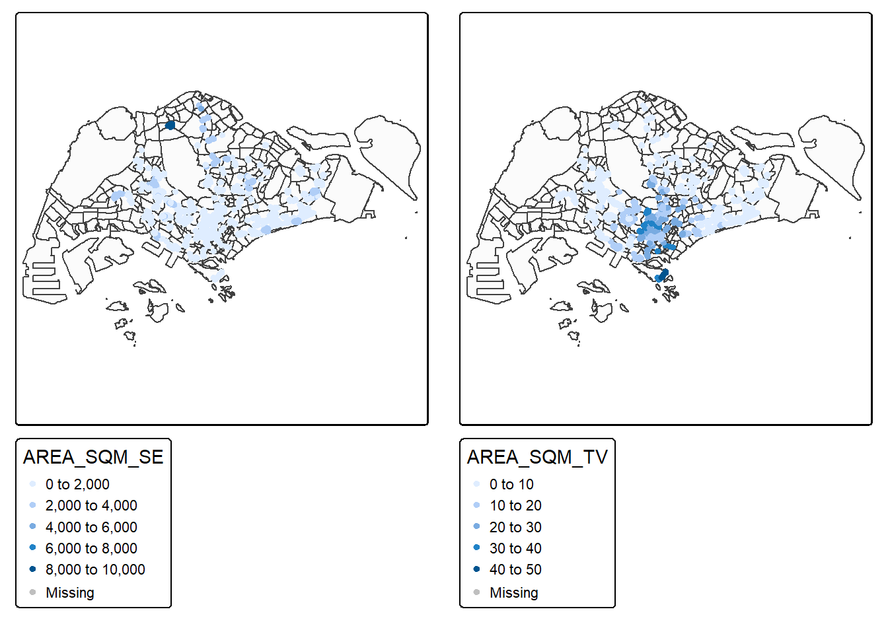
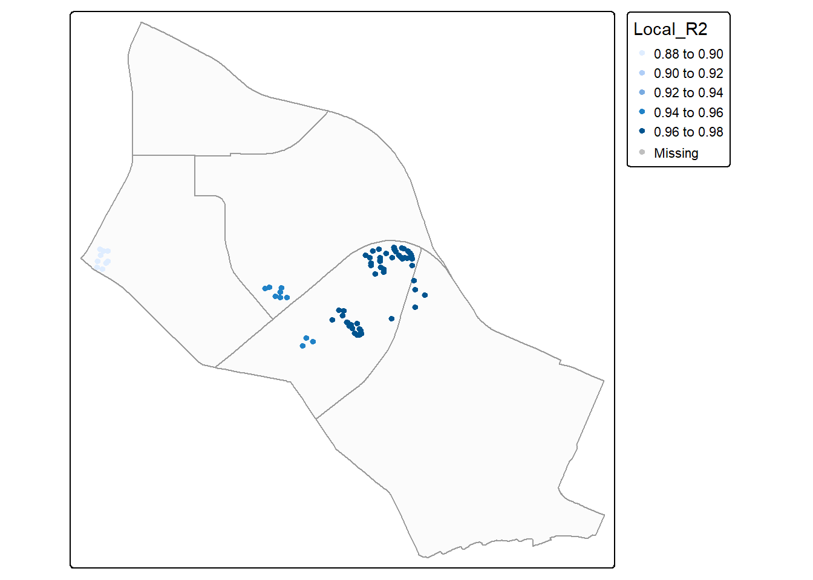

pacman::p_load(olsrr, corrplot, ggpubr,
sf, sfdep, GWmodel, tmap,
tidyverse, gtsummary,
performance, RColorBrewer)In-class Exercise 6
Getting Started
Geospatial Data Wrangling
Importing geospatial data
mpsz = st_read(dsn = "D:/XieHaoyang3537/ISSS626-GAA-XieHaoyang/Hands-on_Ex/Hands-on_ex07/data/geospatial",
layer = "MP14_SUBZONE_WEB_PL")Reading layer `MP14_SUBZONE_WEB_PL' from data source
`D:\XieHaoyang3537\ISSS626-GAA-XieHaoyang\Hands-on_Ex\Hands-on_ex07\data\geospatial'
using driver `ESRI Shapefile'
Simple feature collection with 323 features and 15 fields
Geometry type: MULTIPOLYGON
Dimension: XY
Bounding box: xmin: 2667.538 ymin: 15748.72 xmax: 56396.44 ymax: 50256.33
Projected CRS: SVY21Updating CRS information
mpsz_svy21 <- st_transform(mpsz, 3414)st_crs(mpsz_svy21)Coordinate Reference System:
User input: EPSG:3414
wkt:
PROJCRS["SVY21 / Singapore TM",
BASEGEOGCRS["SVY21",
DATUM["SVY21",
ELLIPSOID["WGS 84",6378137,298.257223563,
LENGTHUNIT["metre",1]]],
PRIMEM["Greenwich",0,
ANGLEUNIT["degree",0.0174532925199433]],
ID["EPSG",4757]],
CONVERSION["Singapore Transverse Mercator",
METHOD["Transverse Mercator",
ID["EPSG",9807]],
PARAMETER["Latitude of natural origin",1.36666666666667,
ANGLEUNIT["degree",0.0174532925199433],
ID["EPSG",8801]],
PARAMETER["Longitude of natural origin",103.833333333333,
ANGLEUNIT["degree",0.0174532925199433],
ID["EPSG",8802]],
PARAMETER["Scale factor at natural origin",1,
SCALEUNIT["unity",1],
ID["EPSG",8805]],
PARAMETER["False easting",28001.642,
LENGTHUNIT["metre",1],
ID["EPSG",8806]],
PARAMETER["False northing",38744.572,
LENGTHUNIT["metre",1],
ID["EPSG",8807]]],
CS[Cartesian,2],
AXIS["northing (N)",north,
ORDER[1],
LENGTHUNIT["metre",1]],
AXIS["easting (E)",east,
ORDER[2],
LENGTHUNIT["metre",1]],
USAGE[
SCOPE["Cadastre, engineering survey, topographic mapping."],
AREA["Singapore - onshore and offshore."],
BBOX[1.13,103.59,1.47,104.07]],
ID["EPSG",3414]]st_bbox(mpsz_svy21) xmin ymin xmax ymax
2667.538 15748.721 56396.440 50256.334 Aspatial Data Wrangling
Importing the aspatial data
condo_resale = read_csv(
"D:/XieHaoyang3537/ISSS626-GAA-XieHaoyang/Hands-on_Ex/Hands-on_ex07/data/aspatial/Condo_resale_2015.csv")Rows: 1436 Columns: 23
── Column specification ────────────────────────────────────────────────────────
Delimiter: ","
dbl (23): LATITUDE, LONGITUDE, POSTCODE, SELLING_PRICE, AREA_SQM, AGE, PROX_...
ℹ Use `spec()` to retrieve the full column specification for this data.
ℹ Specify the column types or set `show_col_types = FALSE` to quiet this message.Converting aspatial data frame into a sf object
condo_resale.sf <- st_as_sf(condo_resale,
coords = c("LONGITUDE", "LATITUDE"),
crs=4326) %>%
st_transform(crs=3414)Building Hedonic Pricing Models using GWmodel
Building Fixed Bandwidth GWR Model
Computing fixed bandwith
bw.fixed <- bw.gwr(
formula = SELLING_PRICE ~ AREA_SQM + AGE +
PROX_CBD + PROX_CHILDCARE + PROX_ELDERLYCARE +
PROX_URA_GROWTH_AREA + PROX_MRT + PROX_PARK +
PROX_PRIMARY_SCH + PROX_SHOPPING_MALL +
PROX_BUS_STOP + NO_Of_UNITS + FAMILY_FRIENDLY +
FREEHOLD,
data=condo_resale.sf,
approach="AIC",
kernel="gaussian",
adaptive=FALSE,
longlat=FALSE)Fixed bandwidth: 17660.96 AICc value: 42937.77
Fixed bandwidth: 10917.26 AICc value: 42886.26
Fixed bandwidth: 6749.419 AICc value: 42757.54
Fixed bandwidth: 4173.553 AICc value: 42565.01
Fixed bandwidth: 2581.58 AICc value: 42368.05
Fixed bandwidth: 1597.687 AICc value: 42256.42
Fixed bandwidth: 989.6077 AICc value: 42262.3
Fixed bandwidth: 1973.501 AICc value: 42279.95
Fixed bandwidth: 1365.421 AICc value: 42254.72
Fixed bandwidth: 1221.873 AICc value: 42255.41
Fixed bandwidth: 1454.139 AICc value: 42254.82
Fixed bandwidth: 1310.591 AICc value: 42254.84
Fixed bandwidth: 1399.309 AICc value: 42254.71
Fixed bandwidth: 1420.252 AICc value: 42254.73
Fixed bandwidth: 1386.365 AICc value: 42254.7
Fixed bandwidth: 1378.365 AICc value: 42254.71
Fixed bandwidth: 1391.309 AICc value: 42254.7 GWModel method - fixed bandwith
gwr.fixed <- gwr.basic(
formula = SELLING_PRICE ~ AREA_SQM + AGE +
PROX_CBD + PROX_CHILDCARE + PROX_ELDERLYCARE +
PROX_URA_GROWTH_AREA + PROX_MRT + PROX_PARK +
PROX_PRIMARY_SCH + PROX_SHOPPING_MALL +
PROX_BUS_STOP + NO_Of_UNITS + FAMILY_FRIENDLY +
FREEHOLD,
data=condo_resale.sf,
bw=bw.fixed,
kernel = 'gaussian',
longlat = FALSE)gwr.fixed ***********************************************************************
* Package GWmodel *
***********************************************************************
Program starts at: 2025-10-18 16:51:03.210488
Call:
gwr.basic(formula = SELLING_PRICE ~ AREA_SQM + AGE + PROX_CBD +
PROX_CHILDCARE + PROX_ELDERLYCARE + PROX_URA_GROWTH_AREA +
PROX_MRT + PROX_PARK + PROX_PRIMARY_SCH + PROX_SHOPPING_MALL +
PROX_BUS_STOP + NO_Of_UNITS + FAMILY_FRIENDLY + FREEHOLD,
data = condo_resale.sf, bw = bw.fixed, kernel = "gaussian",
longlat = FALSE)
Dependent (y) variable: SELLING_PRICE
Independent variables: AREA_SQM AGE PROX_CBD PROX_CHILDCARE PROX_ELDERLYCARE PROX_URA_GROWTH_AREA PROX_MRT PROX_PARK PROX_PRIMARY_SCH PROX_SHOPPING_MALL PROX_BUS_STOP NO_Of_UNITS FAMILY_FRIENDLY FREEHOLD
Number of data points: 1436
***********************************************************************
* Results of Global Regression *
***********************************************************************
Call:
lm(formula = formula, data = data)
Residuals:
Min 1Q Median 3Q Max
-3470778 -298119 -23481 248917 12234210
Coefficients:
Estimate Std. Error t value Pr(>|t|)
(Intercept) 527633.22 108183.22 4.877 1.20e-06 ***
AREA_SQM 12777.52 367.48 34.771 < 2e-16 ***
AGE -24687.74 2754.84 -8.962 < 2e-16 ***
PROX_CBD -77131.32 5763.12 -13.384 < 2e-16 ***
PROX_CHILDCARE -318472.75 107959.51 -2.950 0.003231 **
PROX_ELDERLYCARE 185575.62 39901.86 4.651 3.61e-06 ***
PROX_URA_GROWTH_AREA 39163.25 11754.83 3.332 0.000885 ***
PROX_MRT -294745.11 56916.37 -5.179 2.56e-07 ***
PROX_PARK 570504.81 65507.03 8.709 < 2e-16 ***
PROX_PRIMARY_SCH 159856.14 60234.60 2.654 0.008046 **
PROX_SHOPPING_MALL -220947.25 36561.83 -6.043 1.93e-09 ***
PROX_BUS_STOP 682482.22 134513.24 5.074 4.42e-07 ***
NO_Of_UNITS -245.48 87.95 -2.791 0.005321 **
FAMILY_FRIENDLY 146307.58 46893.02 3.120 0.001845 **
FREEHOLD 350599.81 48506.48 7.228 7.98e-13 ***
---Significance stars
Signif. codes: 0 '***' 0.001 '**' 0.01 '*' 0.05 '.' 0.1 ' ' 1
Residual standard error: 756000 on 1421 degrees of freedom
Multiple R-squared: 0.6507
Adjusted R-squared: 0.6472
F-statistic: 189.1 on 14 and 1421 DF, p-value: < 2.2e-16
***Extra Diagnostic information
Residual sum of squares: 8.120609e+14
Sigma(hat): 752522.9
AIC: 42966.76
AICc: 42967.14
BIC: 41731.39
***********************************************************************
* Results of Geographically Weighted Regression *
***********************************************************************
*********************Model calibration information*********************
Kernel function: gaussian
Fixed bandwidth: 1386.365
Regression points: the same locations as observations are used.
Distance metric: Euclidean distance metric is used.
****************Summary of GWR coefficient estimates:******************
Min. 1st Qu. Median 3rd Qu.
Intercept -5.0947e+06 7.5228e+04 9.6933e+05 1.6560e+06
AREA_SQM 2.5558e+03 5.4041e+03 7.6995e+03 1.2569e+04
AGE -8.4563e+04 -2.1045e+04 -1.1083e+04 -5.3192e+03
PROX_CBD -3.0121e+06 -2.2299e+05 -1.0207e+05 -5.3900e+04
PROX_CHILDCARE -3.6679e+06 -1.7018e+05 -1.6108e+04 2.4420e+05
PROX_ELDERLYCARE -4.9526e+05 -4.0047e+04 7.6715e+04 1.9650e+05
PROX_URA_GROWTH_AREA -3.0350e+05 -3.0201e+04 5.1598e+04 1.5573e+05
PROX_MRT -2.6892e+06 -3.9441e+05 -2.3485e+05 -1.3171e+05
PROX_PARK -9.1626e+05 -1.2375e+05 4.7999e+04 4.0312e+05
PROX_PRIMARY_SCH -4.7607e+05 -1.2189e+05 2.9963e+04 3.0890e+05
PROX_SHOPPING_MALL -9.7562e+05 -1.2594e+05 -1.2552e+04 1.0019e+05
PROX_BUS_STOP -8.4504e+05 8.8484e+04 3.7699e+05 1.4980e+06
NO_Of_UNITS -1.2111e+03 -3.4940e+02 -5.8441e+01 1.0022e+02
FAMILY_FRIENDLY -1.3608e+06 -5.1541e+04 1.0951e+04 1.5911e+05
FREEHOLD -1.1559e+05 9.5013e+04 2.0430e+05 3.5295e+05
Max.
Intercept 4639265.4
AREA_SQM 19642.4
AGE 41275.9
PROX_CBD 272116.0
PROX_CHILDCARE 1776212.0
PROX_ELDERLYCARE 2742988.5
PROX_URA_GROWTH_AREA 3038754.5
PROX_MRT 1349867.9
PROX_PARK 1102849.3
PROX_PRIMARY_SCH 2148894.9
PROX_SHOPPING_MALL 668261.7
PROX_BUS_STOP 4267600.2
NO_Of_UNITS 2174.3
FAMILY_FRIENDLY 1289044.9
FREEHOLD 1001304.5
************************Diagnostic information*************************
Number of data points: 1436
Effective number of parameters (2trace(S) - trace(S'S)): 302.5667
Effective degrees of freedom (n-2trace(S) + trace(S'S)): 1133.433
AICc (GWR book, Fotheringham, et al. 2002, p. 61, eq 2.33): 42254.7
AIC (GWR book, Fotheringham, et al. 2002,GWR p. 96, eq. 4.22): 41902.94
BIC (GWR book, Fotheringham, et al. 2002,GWR p. 61, eq. 2.34): 42011.36
Residual sum of squares: 3.334499e+14
R-square value: 0.8565589
Adjusted R-square value: 0.8182339
***********************************************************************
Program stops at: 2025-10-18 16:51:03.774388 Building Adaptive Bandwidth GWR Model
Computing the adaptive bandwidth
bw.adaptive <- bw.gwr(
formula = SELLING_PRICE ~ AREA_SQM + AGE +
PROX_CBD + PROX_CHILDCARE + PROX_ELDERLYCARE +
PROX_URA_GROWTH_AREA + PROX_MRT + PROX_PARK +
PROX_PRIMARY_SCH + PROX_SHOPPING_MALL +
PROX_BUS_STOP + NO_Of_UNITS +
FAMILY_FRIENDLY + FREEHOLD,
data=condo_resale.sf,
approach="AIC",
kernel="gaussian",
adaptive=TRUE,
longlat=FALSE)Adaptive bandwidth (number of nearest neighbours): 895 AICc value: 42879.45
Adaptive bandwidth (number of nearest neighbours): 561 AICc value: 42823.52
Adaptive bandwidth (number of nearest neighbours): 354 AICc value: 42677.14
Adaptive bandwidth (number of nearest neighbours): 226 AICc value: 42484.37
Adaptive bandwidth (number of nearest neighbours): 147 AICc value: 42353.27
Adaptive bandwidth (number of nearest neighbours): 98 AICc value: 42280.68
Adaptive bandwidth (number of nearest neighbours): 68 AICc value: 42201.18
Adaptive bandwidth (number of nearest neighbours): 49 AICc value: 42100.66
Adaptive bandwidth (number of nearest neighbours): 37 AICc value: 42055.68
Adaptive bandwidth (number of nearest neighbours): 30 AICc value: 41982.22
Adaptive bandwidth (number of nearest neighbours): 25 AICc value: 42003.33
Adaptive bandwidth (number of nearest neighbours): 32 AICc value: 42035.41
Adaptive bandwidth (number of nearest neighbours): 27 AICc value: 41978.63
Adaptive bandwidth (number of nearest neighbours): 27 AICc value: 41978.63 Constructing the adaptive bandwidth gwr model
gwr.adaptive <- gwr.basic(
formula = SELLING_PRICE ~ AREA_SQM + AGE +
PROX_CBD + PROX_CHILDCARE + PROX_ELDERLYCARE +
PROX_URA_GROWTH_AREA + PROX_MRT + PROX_PARK +
PROX_PRIMARY_SCH + PROX_SHOPPING_MALL + PROX_BUS_STOP +
NO_Of_UNITS + FAMILY_FRIENDLY + FREEHOLD,
data=condo_resale.sf,
bw=bw.adaptive,
kernel = 'gaussian',
adaptive=TRUE,
longlat = FALSE)gwr.adaptive ***********************************************************************
* Package GWmodel *
***********************************************************************
Program starts at: 2025-10-18 16:51:10.536825
Call:
gwr.basic(formula = SELLING_PRICE ~ AREA_SQM + AGE + PROX_CBD +
PROX_CHILDCARE + PROX_ELDERLYCARE + PROX_URA_GROWTH_AREA +
PROX_MRT + PROX_PARK + PROX_PRIMARY_SCH + PROX_SHOPPING_MALL +
PROX_BUS_STOP + NO_Of_UNITS + FAMILY_FRIENDLY + FREEHOLD,
data = condo_resale.sf, bw = bw.adaptive, kernel = "gaussian",
adaptive = TRUE, longlat = FALSE)
Dependent (y) variable: SELLING_PRICE
Independent variables: AREA_SQM AGE PROX_CBD PROX_CHILDCARE PROX_ELDERLYCARE PROX_URA_GROWTH_AREA PROX_MRT PROX_PARK PROX_PRIMARY_SCH PROX_SHOPPING_MALL PROX_BUS_STOP NO_Of_UNITS FAMILY_FRIENDLY FREEHOLD
Number of data points: 1436
***********************************************************************
* Results of Global Regression *
***********************************************************************
Call:
lm(formula = formula, data = data)
Residuals:
Min 1Q Median 3Q Max
-3470778 -298119 -23481 248917 12234210
Coefficients:
Estimate Std. Error t value Pr(>|t|)
(Intercept) 527633.22 108183.22 4.877 1.20e-06 ***
AREA_SQM 12777.52 367.48 34.771 < 2e-16 ***
AGE -24687.74 2754.84 -8.962 < 2e-16 ***
PROX_CBD -77131.32 5763.12 -13.384 < 2e-16 ***
PROX_CHILDCARE -318472.75 107959.51 -2.950 0.003231 **
PROX_ELDERLYCARE 185575.62 39901.86 4.651 3.61e-06 ***
PROX_URA_GROWTH_AREA 39163.25 11754.83 3.332 0.000885 ***
PROX_MRT -294745.11 56916.37 -5.179 2.56e-07 ***
PROX_PARK 570504.81 65507.03 8.709 < 2e-16 ***
PROX_PRIMARY_SCH 159856.14 60234.60 2.654 0.008046 **
PROX_SHOPPING_MALL -220947.25 36561.83 -6.043 1.93e-09 ***
PROX_BUS_STOP 682482.22 134513.24 5.074 4.42e-07 ***
NO_Of_UNITS -245.48 87.95 -2.791 0.005321 **
FAMILY_FRIENDLY 146307.58 46893.02 3.120 0.001845 **
FREEHOLD 350599.81 48506.48 7.228 7.98e-13 ***
---Significance stars
Signif. codes: 0 '***' 0.001 '**' 0.01 '*' 0.05 '.' 0.1 ' ' 1
Residual standard error: 756000 on 1421 degrees of freedom
Multiple R-squared: 0.6507
Adjusted R-squared: 0.6472
F-statistic: 189.1 on 14 and 1421 DF, p-value: < 2.2e-16
***Extra Diagnostic information
Residual sum of squares: 8.120609e+14
Sigma(hat): 752522.9
AIC: 42966.76
AICc: 42967.14
BIC: 41731.39
***********************************************************************
* Results of Geographically Weighted Regression *
***********************************************************************
*********************Model calibration information*********************
Kernel function: gaussian
Adaptive bandwidth: 27 (number of nearest neighbours)
Regression points: the same locations as observations are used.
Distance metric: Euclidean distance metric is used.
****************Summary of GWR coefficient estimates:******************
Min. 1st Qu. Median 3rd Qu.
Intercept -3.4055e+08 -4.9698e+05 7.6667e+05 1.6291e+06
AREA_SQM 3.2900e+03 5.5381e+03 7.6847e+03 1.2674e+04
AGE -1.0016e+05 -2.7556e+04 -1.3592e+04 -4.6598e+03
PROX_CBD -4.0881e+06 -1.9515e+05 -7.3518e+04 2.9526e+04
PROX_CHILDCARE -1.7059e+06 -2.6967e+05 -1.2514e+04 3.4777e+05
PROX_ELDERLYCARE -2.2412e+06 -9.4985e+04 7.9372e+04 3.2765e+05
PROX_URA_GROWTH_AREA -1.8375e+07 -2.3765e+04 5.7504e+04 2.9631e+05
PROX_MRT -4.5351e+07 -6.2318e+05 -2.0888e+05 -3.8964e+04
PROX_PARK -1.0166e+08 -2.0084e+05 1.1152e+05 4.4450e+05
PROX_PRIMARY_SCH -4.6505e+06 -1.9579e+05 -9.1754e+03 4.3824e+05
PROX_SHOPPING_MALL -2.4269e+06 -1.4053e+05 -1.3684e+04 1.5823e+05
PROX_BUS_STOP -2.1436e+06 -8.7705e+04 4.1820e+05 1.2784e+06
NO_Of_UNITS -3.2993e+03 -2.2606e+02 -2.1790e+01 1.4231e+02
FAMILY_FRIENDLY -4.0477e+06 -6.5054e+04 2.2989e+04 1.9452e+05
FREEHOLD -1.0164e+08 2.4578e+04 1.8212e+05 3.8182e+05
Max.
Intercept 55107367.9
AREA_SQM 23242.4
AGE 265480.4
PROX_CBD 26220365.8
PROX_CHILDCARE 3565627.3
PROX_ELDERLYCARE 93434431.6
PROX_URA_GROWTH_AREA 25096284.3
PROX_MRT 9223676.9
PROX_PARK 2754387.0
PROX_PRIMARY_SCH 4618809.5
PROX_SHOPPING_MALL 39514834.8
PROX_BUS_STOP 13319341.1
NO_Of_UNITS 9878.1
FAMILY_FRIENDLY 2315112.2
FREEHOLD 1876281.2
************************Diagnostic information*************************
Number of data points: 1436
Effective number of parameters (2trace(S) - trace(S'S)): 393.0807
Effective degrees of freedom (n-2trace(S) + trace(S'S)): 1042.919
AICc (GWR book, Fotheringham, et al. 2002, p. 61, eq 2.33): 41978.63
AIC (GWR book, Fotheringham, et al. 2002,GWR p. 96, eq. 4.22): 41453.88
BIC (GWR book, Fotheringham, et al. 2002,GWR p. 61, eq. 2.34): 42070.13
Residual sum of squares: 2.305296e+14
R-square value: 0.9008324
Adjusted R-square value: 0.8634199
***********************************************************************
Program stops at: 2025-10-18 16:51:11.222595 Converting SDF into sf data.frame
condo_resale.sf.adaptive <-
st_as_sf(gwr.adaptive$SDF) %>%
st_transform(crs=3414)glimpse(condo_resale.sf.adaptive)Rows: 1,436
Columns: 52
$ Intercept <dbl> 2044700.26, 1773153.15, 3520072.36, 1539855.35…
$ AREA_SQM <dbl> 9559.598, 15390.155, 13016.013, 21340.305, 678…
$ AGE <dbl> -9500.111, -48975.055, -25897.022, -97109.448,…
$ PROX_CBD <dbl> -120265.31, -173034.60, -266084.74, 4535464.61…
$ PROX_CHILDCARE <dbl> 318045.039, 348815.035, -194366.004, 286266.93…
$ PROX_ELDERLYCARE <dbl> -394643.95, 238275.45, 558021.92, 402763.72, -…
$ PROX_URA_GROWTH_AREA <dbl> -159575.59, -31187.00, -253591.14, -4781655.68…
$ PROX_MRT <dbl> -299592.54, -2557296.15, -942766.83, -2495885.…
$ PROX_PARK <dbl> -172380.89, 442318.02, 246972.65, -937538.48, …
$ PROX_PRIMARY_SCH <dbl> 242732.037, 919399.390, 558785.123, 3340638.60…
$ PROX_SHOPPING_MALL <dbl> 302051.162, -215149.309, -142022.712, 134573.9…
$ PROX_BUS_STOP <dbl> 1209536.14, 1919405.53, 1450141.54, 8743551.68…
$ NO_Of_UNITS <dbl> 106.372669, -211.071177, 19.339246, -150.59531…
$ FAMILY_FRIENDLY <dbl> -9098.124, 152642.975, -29284.824, 1723147.674…
$ FREEHOLD <dbl> 303927.63, 400568.89, 162972.29, 1318502.10, 3…
$ y <dbl> 3000000, 3880000, 3325000, 4250000, 1400000, 1…
$ yhat <dbl> 2885980.3, 3464956.3, 3621402.8, 5528248.5, 13…
$ residual <dbl> 114019.686, 415043.736, -296402.814, -1278248.…
$ CV_Score <dbl> 0, 0, 0, 0, 0, 0, 0, 0, 0, 0, 0, 0, 0, 0, 0, 0…
$ Stud_residual <dbl> 0.39812858, 1.12993822, -0.89467945, -3.237264…
$ Intercept_SE <dbl> 505352.2, 959583.4, 1088656.5, 644451.8, 21882…
$ AREA_SQM_SE <dbl> 803.9810, 1041.2806, 1005.1322, 647.0447, 1408…
$ AGE_SE <dbl> 5754.545, 7873.214, 6772.090, 6339.353, 8401.1…
$ PROX_CBD_SE <dbl> 36644.67, 46892.76, 64224.98, 723130.45, 42870…
$ PROX_CHILDCARE_SE <dbl> 311604.5, 383548.3, 356362.3, 318029.0, 726053…
$ PROX_ELDERLYCARE_SE <dbl> 117822.10, 121329.51, 145658.37, 153818.83, 36…
$ PROX_URA_GROWTH_AREA_SE <dbl> 54991.59, 138590.35, 104509.67, 714454.45, 501…
$ PROX_MRT_SE <dbl> 181049.7, 426727.9, 290345.8, 310229.2, 399736…
$ PROX_PARK_SE <dbl> 200556.4, 337273.4, 328846.1, 250084.3, 406910…
$ PROX_PRIMARY_SCH_SE <dbl> 149035.4, 213215.4, 206844.1, 276593.8, 253671…
$ PROX_SHOPPING_MALL_SE <dbl> 106789.05, 168563.26, 124684.33, 237237.76, 33…
$ PROX_BUS_STOP_SE <dbl> 587417.1, 527904.1, 468907.1, 625949.7, 748596…
$ NO_Of_UNITS_SE <dbl> 213.2704, 232.9495, 211.9892, 452.1575, 315.82…
$ FAMILY_FRIENDLY_SE <dbl> 128381.97, 139756.71, 152249.80, 115274.06, 16…
$ FREEHOLD_SE <dbl> 113234.6, 170426.6, 146100.1, 149874.1, 215886…
$ Intercept_TV <dbl> 4.04608981, 1.84783643, 3.23340951, 2.38940359…
$ AREA_SQM_TV <dbl> 11.890328, 14.780026, 12.949553, 32.981191, 4.…
$ AGE_TV <dbl> -1.6508882, -6.2204656, -3.8240810, -15.318510…
$ PROX_CBD_TV <dbl> -3.28193222, -3.69000648, -4.14301022, 6.27198…
$ PROX_CHILDCARE_TV <dbl> 1.020669014, 0.909442298, -0.545416851, 0.9001…
$ PROX_ELDERLYCARE_TV <dbl> -3.34948996, 1.96387060, 3.83103226, 2.6184291…
$ PROX_URA_GROWTH_AREA_TV <dbl> -2.90181817, -0.22503007, -2.42648497, -6.6927…
$ PROX_MRT_TV <dbl> -1.65475280, -5.99280279, -3.24704810, -8.0452…
$ PROX_PARK_TV <dbl> -0.8595132, 1.3114524, 0.7510281, -3.7488897, …
$ PROX_PRIMARY_SCH_TV <dbl> 1.62868734, 4.31206879, 2.70147945, 12.0777779…
$ PROX_SHOPPING_MALL_TV <dbl> 2.82848439, -1.27637129, -1.13905821, 0.567253…
$ PROX_BUS_STOP_TV <dbl> 2.0590756, 3.6358978, 3.0925989, 13.9684567, 0…
$ NO_Of_UNITS_TV <dbl> 0.49876913, -0.90608143, 0.09122749, -0.333059…
$ FAMILY_FRIENDLY_TV <dbl> -0.07086762, 1.09220500, -0.19234721, 14.94826…
$ FREEHOLD_TV <dbl> 2.68405282, 2.35038940, 1.11548393, 8.79739845…
$ Local_R2 <dbl> 0.9172836, 0.9154542, 0.9132622, 0.9192190, 0.…
$ geometry <POINT [m]> POINT (22085.12 29951.54), POINT (25656.…summary(gwr.adaptive$SDF$yhat) Min. 1st Qu. Median Mean 3rd Qu. Max.
392814 1098774 1383270 1751256 1985895 13892256 Visualising local R2
tmap_mode("plot")ℹ tmap mode set to "plot".tm_shape(mpsz_svy21)+
tm_polygons(fill_alpha = 0.1) +
tm_shape(condo_resale.sf.adaptive) +
tm_dots(col = "Local_R2",
border.col = "gray60",
border.lwd = 1) +
tm_view(set.zoom.limits = c(11,14))
── tmap v3 code detected ───────────────────────────────────────────────────────
[v3->v4] `tm_dots()`: use 'fill' for the fill color of polygons/symbols
(instead of 'col'), and 'col' for the outlines (instead of 'border.col').[v3->v4] `tm_view()`: use set_zoom_limits instead of set.zoom.limits
tmap_mode("plot")ℹ tmap mode set to "plot".Visualising coefficient estimates
tmap_mode("plot")ℹ tmap mode set to "plot".AREA_SQM_SE <- tm_shape(mpsz_svy21)+
tm_polygons(alpha = 0.1) +
tm_shape(condo_resale.sf.adaptive) +
tm_dots(col = "AREA_SQM_SE",
border.col = "gray60",
border.lwd = 1) +
tm_view(set.zoom.limits = c(11,14))
── tmap v3 code detected ───────────────────────────────────────────────────────
[v3->v4] `tm_polygons()`: use `fill_alpha` instead of `alpha`.[v3->v4] `tm_view()`: use set_zoom_limits instead of set.zoom.limitsAREA_SQM_TV <- tm_shape(mpsz_svy21)+
tm_polygons(alpha = 0.1) +
tm_shape(condo_resale.sf.adaptive) +
tm_dots(col = "AREA_SQM_TV",
border.col = "gray60",
border.lwd = 1) +
tm_view(set.zoom.limits = c(11,14))[v3->v4] `tm_polygons()`: use `fill_alpha` instead of `alpha`.
[v3->v4] `tm_view()`: use set_zoom_limits instead of set.zoom.limitstmap_arrange(AREA_SQM_SE, AREA_SQM_TV,
asp=1, ncol=2,
sync = TRUE)
tmap_mode("plot")ℹ tmap mode set to "plot".Region Observatio
tampines <- mpsz_svy21 %>%
filter(PLN_AREA_N == "TAMPINES")pts_tampines <- st_filter(
condo_resale.sf.adaptive,
tampines,
.predicate = st_within
)tmap_mode("plot")ℹ tmap mode set to "plot".tm_shape(tampines) +
tm_polygons(fill_alpha = 0.1, border.col = "gray60") +
tm_shape(pts_tampines) +
tm_dots(col = "Local_R2", border.col = "gray60", border.lwd = 1)
── tmap v3 code detected ───────────────────────────────────────────────────────
The Local_R2 values of condos in Tampines are mostly in a relatively high range (above 0.9), and their spatial distribution is clustered.